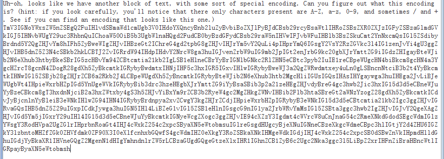
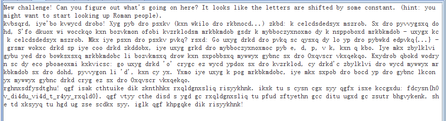
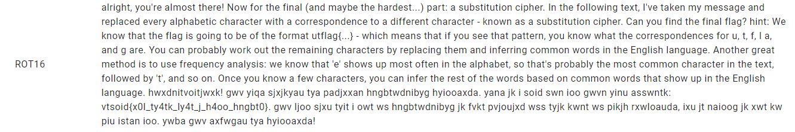
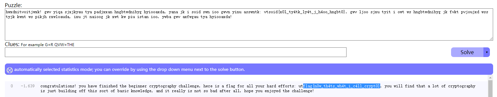
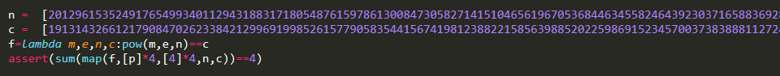

defreplacement(s,cipher): # s为m中对应的字母 m = 'ABCDEFGHIJKLMNOPQRSTUVWXYZabcdefghijklmnopqrstuvwxyz' x = string.ascii_letters.maketrans(s, m) print(cipher.translate(x)) s = 'PMSFADNIJKBXQCGYWETOVHRULZ' s += s.lower() replacement()
[UTCTF2020]basic-crypto
打开文件是二进制形式，先转十六进制，再转ASCII试试

提示很明显base64

提示移位以及Roman，试试凯撒

提示进行词频分析

达芬奇密码 【换位】
根据电影简介，看到斐波那契数列
观察给出的一列数字，为32位，flag也是32位，
写一个函数，输出32个斐波那契数列的数
1 2 3 4 5 6 7
deffib(n): if n == 0or n == 1: return1 return fib(n-1) + fib(n-2)
dd = d1*d2*d3 t1 = pow(dd//d1,d1-2,d1) assert(t1*d2*d3%d1 == 1) t2 = pow(dd//d2,d2-2,d2) assert(t2*d1*d3%d2 == 1) t3 = pow(dd//d3,d3-2,d3) assert(t3*d2*d1%d3 == 1) s = a1*t1*d2*d3+a2*t2*d1*d3+a3*t3*d1*d2 p = 80804238007977405688648566160504278593148666302626415149704905628622876270862865768337953835725801963142685182510812938072115996355782396318303927020705623120652014080032809421180400984242061592520733710243483947230962631945045134540159517488288781666622635328316972979183761952842010806304748313326215619695085380586052550443025074501971925005072999275628549710915357400946408857 s %= dd # print(hex(s)) s %= p s = hex(s)[2:] flag = list(bytearray.fromhex(s)) for i in flag: print(chr(i),end="")
RSA
[HDCTF2019]together 【多文件共模攻击】
先分别分析两个公钥文件
1 2 3 4 5
withopen("pubkey2.pem",'rb') as f: pub = RSA.importKey(f.read()) n = pub.n e = pub.e print(n,'\n',e)
e1 = 2333 e2 = 23333 n = 14853081277902411240991719582265437298941606850989432655928075747449227799832389574251190347654658701773951599098366248661597113015221566041305501996451638624389417055956926238595947885740084994809382932733556986107653499144588614105694518150594105711438983069306254763078820574239989253573144558449346681620784979079971559976102366527270867527423001083169127402157598183442923364480383742653117285643026319914244072975557200353546060352744263637867557162046429886176035616570590229646013789737629785488326501654202429466891022723268768841320111152381619260637023031430545168618446134188815113100443559425057634959299 withopen('myflag1','rb') as f: c1 = base64.b64decode(f.read()) print(c1) withopen('myflag2','rb') as f: c2 = base64.b64decode(f.read()) print(c2) gcd,s,t = gmpy2.gcdext(e1,e2) c1 = libnum.s2n(c1) c2 = libnum.s2n(c2) if s < 0: s = -s c1 = gmpy2.invert(c1,n) if t < 0: t = -t c2 = gmpy2.invert(c2,n)
M = gmpy2.powmod(c1,s,n)*gmpy2.powmod(c2,t,n) % n m = hex(M) print(m) print(codecs.decode(m[2:],'hex')) m = m[2:] missing_padding = 4 - len(m) % 4 if missing_padding: m += '=' * missing_padding print(base64.b64decode(m))
P = [0for i inrange(17)] P[9] = 206027926847308612719677572554991143421 n = 206027926847308612719677572554991143421 phi = 206027926847308612719677572554991143420 c = 213671742765908980787116579976289600595864704574134469173111790965233629909513884704158446946409910475727584342641848597858942209151114627306286393390259700239698869487469080881267182803062488043469138252786381822646126962323295676431679988602406971858136496624861228526070581338082202663895710929460596143281673761666804565161435963957655012011051936180536581488499059517946308650135300428672486819645279969693519039407892941672784362868653243632727928279698588177694171797254644864554162848696210763681197279758130811723700154618280764123396312330032986093579531909363210692564988076206283296967165522152288770019720928264542910922693728918198338839 for i inrange(10,17): P[i] = sympy.nextprime(P[i-1]) print(i, P[i]) n*= P[i] phi *= P[i]-1 for i inrange(8,0,-1): P[i] = sympy.prevprime(P[i+1]) print(i,P[i]) n *= P[i] phi *= P[i]-1 print(n) e = 65537 d = gmpy2.invert(e,phi) p = pow(c,d,n) print(p) print(sympy.nextprime(p))
q直接根据计算即可
1
q = pow(sub_q,q2,q1)
[De1CTF2019]babyrsa 【综合】
依次分析所需要的参数

根据中国剩余定理求得p^4，开四次方求得p为
1 2 3 4 5 6 7 8 9 10 11 12 13 14 15
from sympy.ntheory.modular import crt m = [ 20129615352491765499340112943188317180548761597861300847305827141510465619670536844634558246439230371658836928103063432870245707180355907194284861510906071265352409579441048101084995923962148527097370705452070577098780246282820065573711015664291991372085157016901209114191068574208680397710042842835940428451949500607613634682684113208766694028789275748528254287705759528498986306494267817198340658241873024800336013946294891687591013414935237821291805123285905335762719823771647853378892868896078424572232934360940672962436849523915563328779942134504499568866135266628078485232098208237036724121481835035731201383423, 31221650155627849964466413749414700613823841060149524451234901677160009099014018926581094879840097248543411980533066831976617023676225625067854003317018794041723612556008471579060428898117790587991055681380408263382761841625714415879087478072771968160384909919958010983669368360788505288855946124159513118847747998656422521414980295212646675850690937883764000571667574381419144372824211798018586804674824564606122592483286575800685232128273820087791811663878057827386379787882962763290066072231248814920468264741654086011072638211075445447843691049847262485759393290853117072868406861840793895816215956869523289231421, 29944537515397953361520922774124192605524711306753835303703478890414163510777460559798334313021216389356251874917792007638299225821018849648520673813786772452822809546571129816310207232883239771324122884804993418958309460009406342872173189008449237959577469114158991202433476710581356243815713762802478454390273808377430685157110095496727966308001254107517967559384019734279861840997239176254236069001453544559786063915970071130087811123912044312219535513880663913831358790376650439083660611831156205113873793106880255882114422025746986403355066996567909581710647746463994280444700922867397754748628425967488232530303, 25703437855600135215185778453583925446912731661604054184163883272265503323016295700357253105301146726667897497435532579974951478354570415554221401778536104737296154316056314039449116386494323668483749833147800557403368489542273169489080222009368903993658498263905567516798684211462607069796613434661148186901892016282065916190920443378756167250809872483501712225782004396969996983057423942607174314132598421269169722518224478248836881076484639837343079324636997145199835034833367743079935361276149990997875905313642775214486046381368619638551892292787783137622261433528915269333426768947358552919740901860982679180791] r = [ 19131432661217908470262338421299691998526157790583544156741981238822158563988520225986915234570037383888112724408392918113942721994125505014727545946133307329781747600302829588248042922635714391033431930411180545085316438084317927348705241927570432757892985091396044950085462429575440060652967253845041398399648442340042970814415571904057667028157512971079384601724816308078631844480110201787343583073815186771790477712040051157180318804422120472007636722063989315320863580631330647116993819777750684150950416298085261478841177681677867236865666207391847046483954029213495373613490690687473081930148461830425717614569, 15341898433226638235160072029875733826956799982958107910250055958334922460202554924743144122170018355117452459472017133614642242411479849369061482860570279863692425621526056862808425135267608544855833358314071200687340442512856575278712986641573012456729402660597339609443771145347181268285050728925993518704899005416187250003304581230701444705157412790787027926810710998646191467130550713600765898234392350153965811595060656753711278308005193370936296124790772689433773414703645703910742193898471800081321469055211709339846392500706523670145259024267858368216902176489814789679472227343363035428541915118378163012031, 18715065071648040017967211297231106538139985087685358555650567057715550586464814763683688299037897182845007578571401359061213777645114414642903077003568155508465819628553747173244235936586812445440095450755154357646737087071605811984163416590278352605433362327949048243722556262979909488202442530307505819371594747936223835233586945423522256938701002370646382097846105014981763307729234675737702252155130837154876831885888669150418885088089324534892506199724486783446267336789872782137895552509353583305880144947714110009893134162185382309992604435664777436197587312317224862723813510974493087450281755452428746194446, 2282284561224858293138480447463319262474918847630148770112472703128549032592187797289965592615199709857879008271766433462032328498580340968871260189669707518557157836592424973257334362931639831072584824103123486522582531666152363874396482744561758133655406410364442174983227005501860927820871260711861008830120617056883514525798709601744088135999465598338635794275123149165498933580159945032363880613524921913023341209439657145962332213468573402863796920571812418200814817086234262280338221161622789516829363805084715652121739036183264026120868756523770196284142271849879003202190966150390061195469351716819539183797]
a = crt(m,r) print(a[0]) print(gmpy2.mpz(pow(a[0],1/4)))
from Crypto.Util.number import * from tqdm import tqdm
defdecrypt_RSA(c, e, p, q): phi = (p-1) * (q-1) d = inverse(e, phi) m = pow(c, d, p*q) print(long_to_bytes(m))
n = 177269125756508652546242326065138402971542751112423326033880862868822164234452280738170245589798474033047460920552550018968571267978283756742722231922451193 c = 47718022601324543399078395957095083753201631332808949406927091589044837556469300807728484035581447960954603540348152501053100067139486887367207461593404096
low = str(n)[-18:] high = str(n)[:18] pq_prob = []
for i inrange(10): for j inrange(10): for k inrange(10): pq_prob.append(int(high + str(i) + str(j)+ str(k) + low))
for x in tqdm(pq_prob): f = factor(x) if (len(f) == 2and f[0][0].nbits() == 64): p, q = f[0][0], f[1][0] break
defAMM(o, r, q): start = time.time() print('\n----------------------------------------------------------------------------------') print('Start to run Adleman-Manders-Miller Root Extraction Method') print('Try to find one {:#x}th root of {} modulo {}'.format(r, o, q)) g = GF(q) o = g(o) p = g(random.randint(1, q)) while p ^ ((q-1) // r) == 1: p = g(random.randint(1, q)) print('[+] Find p:{}'.format(p)) t = 0 s = q - 1 while s % r == 0: t += 1 s = s // r print('[+] Find s:{}, t:{}'.format(s, t)) k = 1 while (k * s + 1) % r != 0: k += 1 alp = (k * s + 1) // r print('[+] Find alp:{}'.format(alp)) a = p ^ (r**(t-1) * s) b = o ^ (r*alp - 1) c = p ^ s h = 1 for i inrange(1, t): d = b ^ (r^(t-1-i)) if d == 1: j = 0 else: print('[+] Calculating DLP...') j = - discrete_log(d, a) print('[+] Finish DLP...') b = b * (c^r)^j h = h * c^j c = c^r result = o^alp * h end = time.time() print("Finished in {} seconds.".format(end - start)) print('Find one solution: {}'.format(result)) return result
但该算法只能求得一个根，实际上开0x1337次方，最多会有0x1337个根。
那么如何找到其他根呢？
先找到所有0x1336个proot使得
proote=1(modp)
然后乘以上面求得的根即可。
由于
(prootp−1/e)e=prootp−1=1(modp)
所以只需要
1 2 3 4 5 6 7 8 9 10 11
deffindAllPRoot(p, e): print("Start to find all the Primitive {:#x}th root of 1 modulo {}.".format(e, p)) start = time.time() proot = set() whilelen(proot) < e: g = pow(random.randint(2, p-1), (p-1)//e, p) ifpow(g,e//2,p) != 1: proot.add(g) end = time.time() print("Finished in {} seconds.".format(end - start)) return proot
pp = gmpy2.iroot(n,2)[0] for x inrange(pp+1,pp+3): yy = pow(x,2)-n if gmpy2.iroot(yy,2)[1]: y = gmpy2.iroot(yy,2)[0] p = (x-y) q = x + y print("p:",p) print("q:",q) phi = (p-1)*(q-1) d = gmpy2.invert(e,phi) m = pow(c,d,n) print(m) print(long_to_bytes(m))
lt = time.mktime((2021,4,28,20,42,6,2,118,0)) print(lt) a1 = 3.1603143215179443 s = 0 for i inrange(3): for j inrange(100000): random.seed(s) x = random.getrandbits(2048) s = int(lt) - i + j * 10 ** -5 if n % x == 0: p = x print(p) q = n//p phi = (p-1)*(q-1) d = gmpy2.invert(e,phi) m = pow(c,d,n) print(long_to_bytes(m)) break
n1=75003557379080252219517825998990183226659117019770735080523409561757225883651040882547519748107588719498261922816865626714101556207649929655822889945870341168644508079317582220034374613066751916750036253423990673764234066999306874078424803774652754587494762629397701664706287999727238636073466137405374927829 c1=68111901092027813007099627893896838517426971082877204047110404787823279211508183783468891474661365139933325981191524511345219830693064573462115529345012970089065201176142417462299650761299758078141504126185921304526414911455395289228444974516503526507906721378965227166653195076209418852399008741560796631569 hint1=23552090716381769484990784116875558895715552896983313406764042416318710076256166472426553520240265023978449945974218435787929202289208329156594838420190890104226497263852461928474756025539394996288951828172126419569993301524866753797584032740426259804002564701319538183190684075289055345581960776903740881951 hint2=52723229698530767897979433914470831153268827008372307239630387100752226850798023362444499211944996778363894528759290565718266340188582253307004810850030833752132728256929572703630431232622151200855160886614350000115704689605102500273815157636476901150408355565958834764444192860513855376978491299658773170270 q1 = gmpy2.gcd(n1,pow(hint2-212121,202020,n1)*pow(2020,202020,n1)-hint1*pow(2021,202020,n1)) print(q1) p1 = n1//q1 d = Rsa.get_d(65537,p1,q1,n1) p = Rsa.decrypt(c1,d,n1)
c = 13492392717469817866883431475453770951837476241371989714683737558395769731416522300851917887957945766132864151382877462142018129852703437240533684604508379950293643294877725773675505912622208813435625177696614781601216465807569201380151669942605208425645258372134465547452376467465833013387018542999562042758 d = Rsa.get_d(65537,p,q,p*q) m = Rsa.decrypt(c,d,p*q)